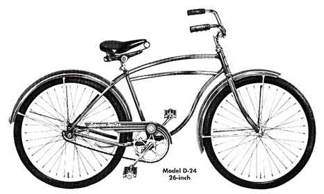

Year: 1958
Manufacturer: Schwinn
Model: Spitfire
Original Price: €49.95
The Legend
The 1958 Schwinn Spitfire represents the golden age of American bicycle manufacturing. With its distinctive styling and robust construction, it became a symbol of post-war prosperity and youth culture.
"The Spitfire wasn't just a bicycle; it was a statement of American
engineering and style that would influence bicycle design for decades to come."
Technical Specifications
| Frame Material | Electroforged Steel |
|---|---|
| Wheel Size | 26 inch |
| Brakes | Schwinn Coaster Brake |
| Paint | Radiant Red with White Trim |
| Saddle | Mesinger Deluxe |